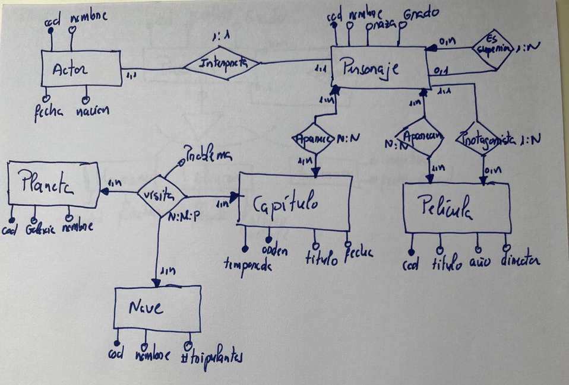
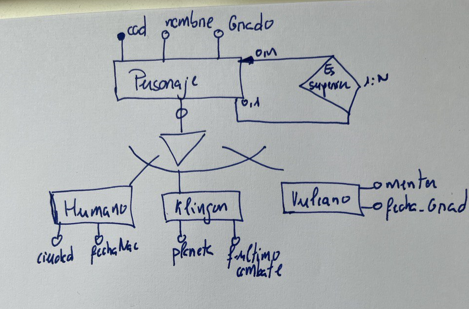
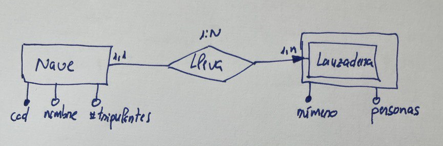

Un club de fans de la famosa película startreck ha decidido crear una página web donde se pueda consultar información referente a todas las películas y capítulos de la saga. El dominio startreckfans.com se redirigirá a un servidor web que consulte una base de datos con la siguiente información.
De los actores es necesario conocer el nombre completo del actor, el personaje que interpreta, la fecha de nacimiento y su nacionalidad.
Respecto a los personajes es necesario almacenar su nombre, raza y graduación militar que desempeña (capitán, teniente, almirante...). Es importante conocer el actor que interpreta el personaje, teniendo en cuenta que un personaje solo puede ser interpretado por un actor y que un actor solo puede interpretar a un personaje. Además, será necesario conocer el personaje del que depende directamente en graduación militar.
De los capítulos hay que almacenar todos los capítulos, indicando a qué temporada pertenece cada capítulo, el título y orden en el que fue rodado, fecha de su primera emisión en televisión y los personajes que participaron en cada capítulo.
De las películas se debe almacenar todas aquellas que se proyectaron en cines, cada una con su año de lanzamiento, título y director. También hay que guardar los personajes que aparecen en cada película y cuál de ellos fue el protagonista.
Respecto a los planetas, tener en cuenta que en cada capítulo se visita 1 o varios planetas y hay que almacenar el código del planeta, su nombre galaxia a la que pertenece y el problema que se resolvió en esa visita y además cuál fue la nave con la que se viajó al planeta. Para la descripción del problema será suficiente con un campo de texto de 255 caracteres. De la nave se almacenará el nombre, código y número de tripulantes.

El club de fans de startreck ha pensado ampliar los requisitos de la página web para hacer una segunda versión. Esta segunda versión consiste en incluir información extra para los personajes. De esta manera si el personaje es un humano, se indicará su fecha de nacimiento y ciudad terráquea donde nació. Si el personaje es de la raza Vulcano, se guardará entonces el nombre del mentor y la fecha de graduación y si es de raza Klingon se guardará su planeta natal y la fecha de su último combate.
Realizar una generalización/especialización de la entidad personaje indicando las especializaciones necesarias.

Como vemos, al tratarse de una especialización total y exclusiva, cada personaje solo puede pertenecer a una de las razas y además tiene que pertenecer a una de manera obligatoria.
El club de fans de startreck quiere una tercera versión de la base de datos de la siguiente forma:
- En cada capítulo, la nave que viaja a un planeta, puede disponer de una nave pequeña llamada lanzadera con la que bajan a la superficie del planeta. La existencia de la lanzadera, solo tienen sentido si existe la nave a la que pertenece. Se identificará cada lanzadera mediante un número entero y el código de la nave. Es necesario conocer la capacidad en personas de la nave.
